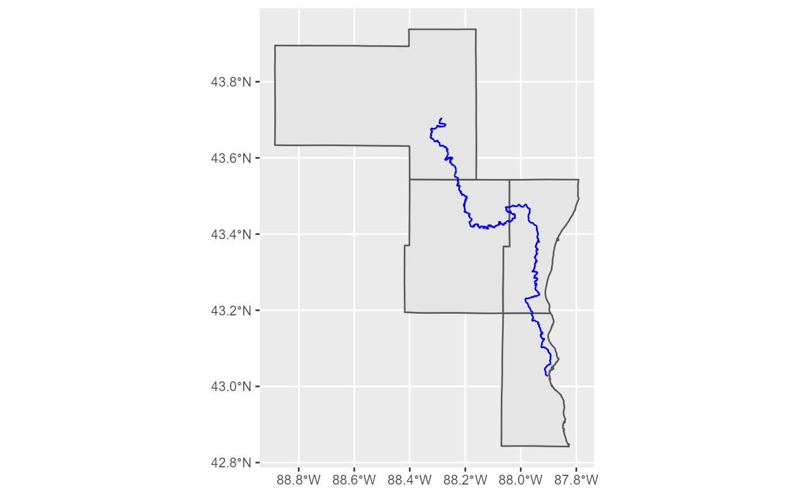
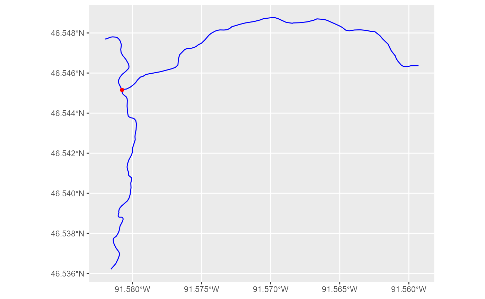
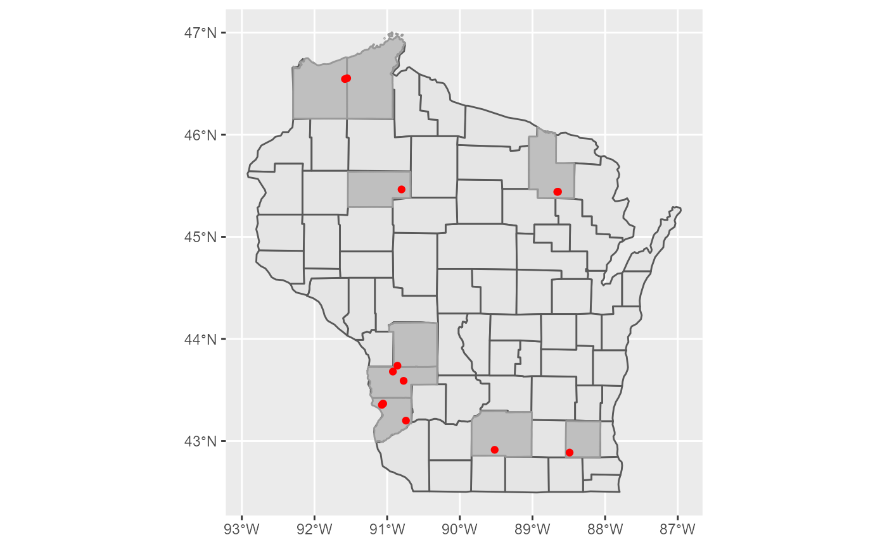
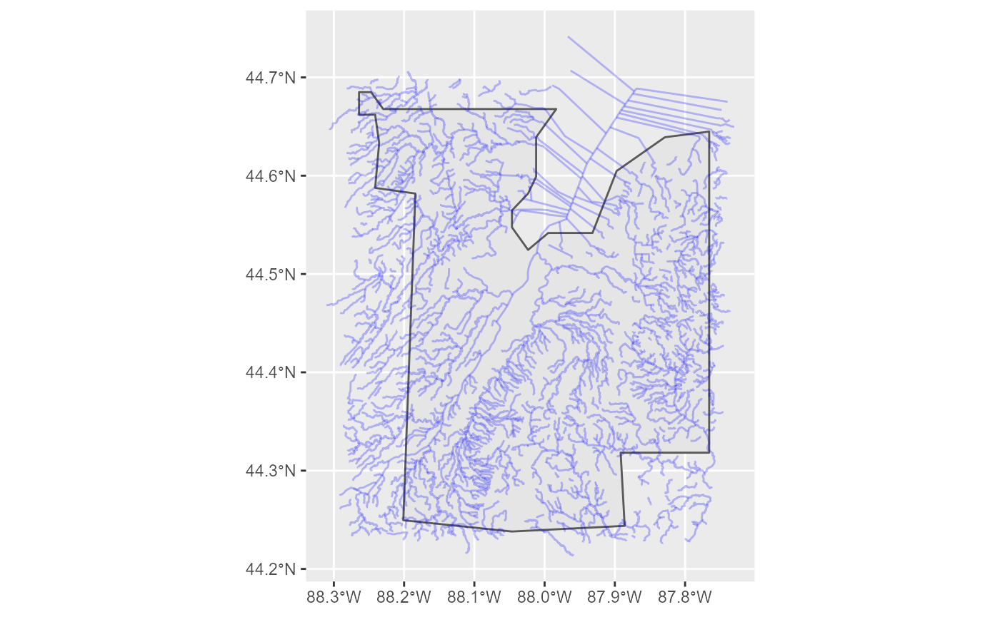
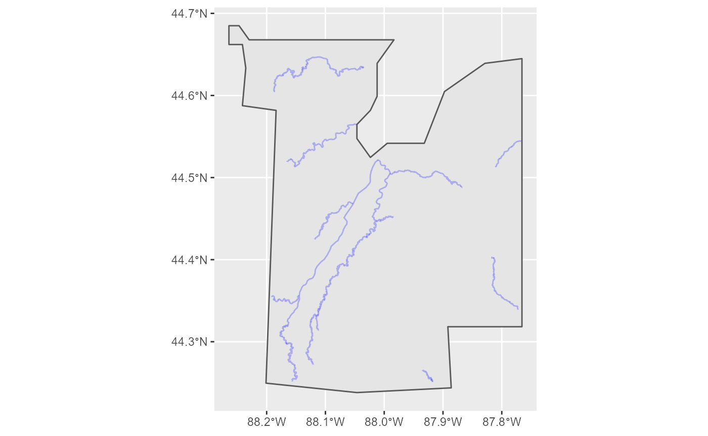
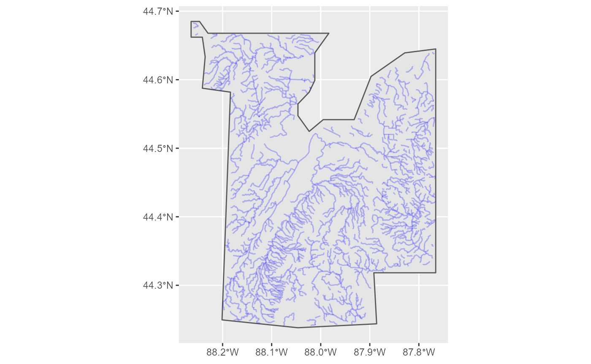
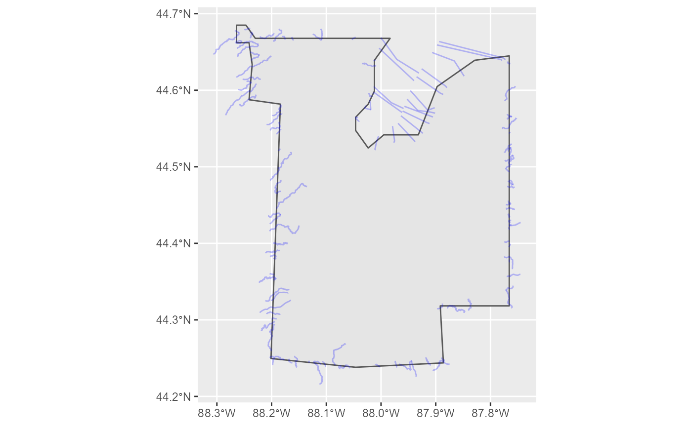

Spatial Queries
06 January, 2022
spatial_queries.RmdArcGIS REST API’s may be spatially queried using the get_layer_by_* family of functions.These functions require a spatial object of class (i.e. of the R package sf: Simple Features for R) and a Spatial Relationship to be passed to the geometry and sp_rel arguments respectively.
The package contains five functions that can be used to perform spatial queries:
-
get_layer_by_line -
get_layer_by_point -
get_layer_by_polygon -
get_layer_by_multipoint -
get_layer_by_envelopeURL’s for examples
Example Source Data#WDNR Server server <- "https://dnrmaps.wi.gov/arcgis/rest/services/" server2 <- "https://dnrmaps.wi.gov/arcgis2/rest/services/" #River URL layer <- "TS_AGOL_STAGING_SERVICES/EN_AGOL_STAGING_SurfaceWater_WTM/MapServer/2" river_url <- paste0(server2,layer) #Country URL layer <- "DW_Map_Dynamic/EN_Basic_Basemap_WTM_Ext_Dynamic_L16/MapServer/3" county_url <- paste0(server,layer) #Trout URL layer <- "FM_Trout/FM_TROUT_HAB_SITES_WTM_Ext/MapServer/0" trout_url <- paste0(server,layer) #Watershed URL layer <- "WT_SWDV/WT_Inland_Water_Resources_WTM_Ext_v2/MapServer/5" watershed_url <- paste0(server,layer) #get layers for queries brown_county <- wis_counties[wis_counties$county == "brown",] mke_river <- get_spatial_layer(river_url, where = "RIVER_SYS_NAME = 'Milwaukee River'") #> Warning in CPL_crs_from_input(x): GDAL Message 1: +init=epsg:XXXX syntax is #> deprecated. It might return a CRS with a non-EPSG compliant axis order. trout_hab_project<- get_spatial_layer( trout_url, where = "WATERBODYNAMECOMBINED = 'Little Bois Brule'") trout_hab_projects<- get_spatial_layer( trout_url, where = "FISCALYEAR = 2018")get_layer_by_line
The
get_layer_by_linefunction uses A LINSESTRING or MULTILINESTRING sf object to query an ArcGIS REST API. The below example uses a MULTILINESTRING sf object of the Milwaukee River to query the Wisconsin County polygon layer.counties <- get_layer_by_line(url = county_url, geometry = mke_river) ggplot2::ggplot() + ggplot2::geom_sf(data = counties) + ggplot2::geom_sf(data = mke_river,color = "blue")
get_layer_by_point
The
get_layer_by_linefunction uses a POINT sf object to query an ArcGIS REST API. The below example shows how this can be used to return which rivers intersect with a trout habitat project on the Little Bois Brule river.trout_streams <- get_layer_by_point(url = river_url, geometry = trout_hab_project) ggplot2::ggplot() + ggplot2::geom_sf(data = trout_streams, color = "blue") + ggplot2::geom_sf(data = trout_hab_project,color = "red")
get_layer_by_multipoint
The
get_layer_by_multipointfunction uses a MULTIPOINT sf object to query an ArcGIS REST API. The below example shows how this can be used to determine which Wisconsin counties intersect with trout habitat projects completed in 2018trout_counties2018 <- get_layer_by_multipoint(url = county_url, geometry = trout_hab_projects) #> Warning in get_layer_by_multipoint(url = county_url, geometry = trout_hab_projects): get_layer_by_multipoint has been generalized to get_layer_by_point. #> Please use that function instead as this one is being deprecated. ggplot2::ggplot() + ggplot2::geom_sf(data = wis_counties)+ ggplot2::geom_sf(data = trout_counties2018, fill = "gray75",color = "gray60") + ggplot2::geom_sf(data = trout_hab_projects,color = "red")
get_layer_by_polygon
The
get_layer_by_linefunction uses a POLYGON sf object to query an ArcGIS REST API. The below examples shows how this can be used to find what rivers intersect with Wisconsin’s Brown County.brown_rivers <-get_layer_by_poly(river_url,brown_county) ggplot2::ggplot()+ ggplot2::geom_sf(data = brown_county) + ggplot2::geom_sf(data = brown_rivers,color = "blue",alpha = 0.25)
get_layer_by_envelope
The
get_layer_by_envelopefunction accepts any sf object to query an ArcGIS REST API using the sf objects bounding box. The below example shows how this is used to query WI’s Rivers ArcGIS REST API using a sf POLYGON object of Wisconsin’s Brown county. Note how the results compare to when this same object is queried using the get_layer_by_polygon function.brown_rivers <- get_layer_by_envelope(river_url,brown_county) ggplot2::ggplot()+ ggplot2::geom_sf(data = brown_county) + ggplot2::geom_sf(data = brown_rivers,color = "blue",alpha = 0.25)
Combining Spatial and SQL Queries
Spatial queries can be combined with SQL statements to further refine queries.
brown_rivers <- get_layer_by_poly(river_url, brown_county, where = "STREAM_ORDER > 3") ggplot2::ggplot()+ ggplot2::geom_sf(data = brown_county) + ggplot2::geom_sf(data = brown_rivers,color = "blue",alpha = 0.25)
Spatial Relationship
The
sp_relargument can be used to define the spatial relationship between the two feature classes involved within a spatial query. The default spatial relationships for theget_layer_by_polyfunction is “esriSpatialRelContains”. All other functions default to “esriSpatialRelIntersects”.brown_rivers <-get_layer_by_poly(river_url,brown_county) ggplot2::ggplot()+ ggplot2::geom_sf(data = brown_county) + ggplot2::geom_sf(data = brown_rivers,color = "blue",alpha = 0.25)
Using “esriSpatialRelCrosses” returns different records compared to the above example.
brown_rivers <-get_layer_by_poly(river_url,brown_county,sp_rel = "esriSpatialRelCrosses") ggplot2::ggplot()+ ggplot2::geom_sf(data = brown_county) + ggplot2::geom_sf(data = brown_rivers,color = "blue",alpha = 0.25)
Lookup Tables
The
sp_rel_lookupdata.frame explains the various types of spatial relationships available through ArcGIS REST APIs.
Thesp_rel_validdata.frame shows which spatial relationships are valid with different geometry types being queried and used to do spatial queries.The valid_sp_rel Function
The
valid_sp_relfunction can be used to to see which spatial relation types are applicable to different geometries.valid_sp_rel("line","line") #> [1] "esriSpatialRelCrosses" "esriSpatialRelEnvelopeIntersects" #> [3] "esriSpatialRelIndexIntersects" "esriSpatialRelIntersects" #> [5] "esriSpatialRelRelation"